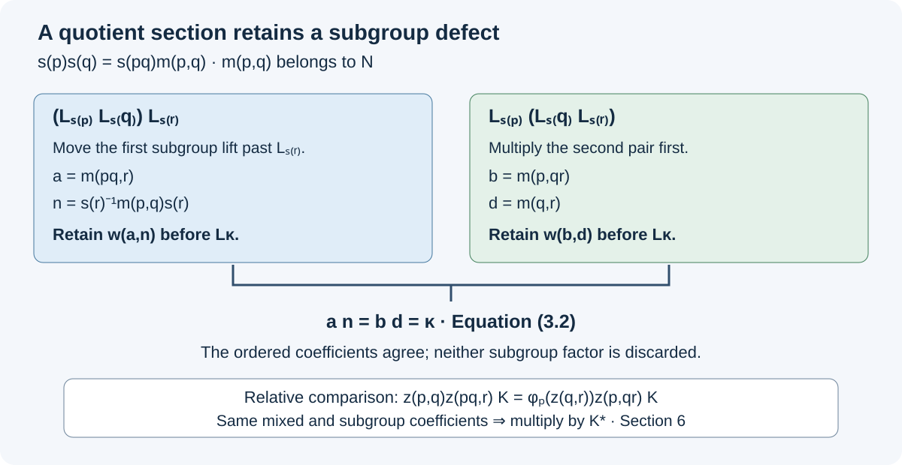

Quotient cocycles and reconstruction
Passing from a group to a quotient need not produce an action of the quotient. A chosen representative of a product can differ from the product of the representatives by a nontrivial subgroup element. This lesson keeps that element, the subgroup's unitary cocycle, and the order of every coefficient. It then proves how a relative commutant absorbs the resulting defects and how a correction on the quotient recovers the cocycle on the entire group.
All algebras below are unital von Neumann algebras, all inclusions preserve the unit, and all automorphisms are normal. The algebraic arguments do not require factoriality, amenability, injectivity, or a splitting of the group extension. The countable discrete group setting suffices for the intended application. No existence of a cohomology correction is assumed until it is explicitly stated in Section 7.
A group that records a cocycle action
A normalized cocycle action of a group \(G\) on \(M\) consists of automorphisms \(\alpha_g\) and unitaries \(v(g,h)\in M\), with
\[ \begin{gathered} \alpha_e=\operatorname{id},\qquad v(e,g)=v(g,e)=1,\\ \alpha_g\alpha_h=\operatorname{Ad}(v(g,h))\alpha_{gh},\\ v(g,h)v(gh,k)=\alpha_g(v(h,k))v(g,hk). \end{gathered} \tag{1.1} \]The second line alone would allow a central associativity defect. The third line requires exact equality of unitaries.
Proposition. On \(\mathcal U(M)\times G\), the multiplication
\[ (a,g)(b,h)=(a\alpha_g(b)v(g,h),gh) \tag{1.2} \]defines a group. If \(L_g=(1,g)\) and \(a\in\mathcal U(M)\) is identified with \((a,e)\), then
\[ L_g a=\alpha_g(a)L_g,\qquad L_gL_h=v(g,h)L_{gh}. \tag{1.3} \]The coefficient in an expression \(aL_g\) is unique.
Proof. The coefficients of the two bracketings of three factors are
\[ \begin{aligned} &a\alpha_g(b)v(g,h)\alpha_{gh}(c)v(gh,k),\\ &a\alpha_g(b)\alpha_g\alpha_h(c)\alpha_g(v(h,k))v(g,hk). \end{aligned} \]Replace \(\alpha_g\alpha_h(c)\) by \(v(g,h)\alpha_{gh}(c)v(g,h)^*\) in the second expression. The last line of (1.1) cancels the remaining \(v(g,h)^*\), producing the first expression. Thus multiplication is associative. The identity is \((1,e)\), and
\[ (a,g)^{-1} =\bigl(\alpha_g^{-1}(a^*v(g,g^{-1})^*),g^{-1}\bigr). \tag{1.4} \]Multiplication on the right gives the identity directly. Every element has such a right inverse. In any associative monoid with that property, a right inverse \(y\) of \(x\), and a right inverse \(z\) of \(y\), satisfy \(x=x(yz)=(xy)z=z\); hence \(yx=yz=1\). So (1.4) is also a left inverse. Equations (1.3) follow from (1.2), and uniqueness follows from equality of ordered pairs. \(\square\)
This group is an algebraic device for tracking coefficients; no operator-algebraic crossed-product construction is needed in this proof.
A section and its subgroup defect
Let \(N\) be a normal subgroup of \(G\), let \(P=G/N\), and choose a section \(s:P\to G\) with \(s(e)=e\). Write
\[ \begin{gathered} m(p,q)=s(pq)^{-1}s(p)s(q)\in N,\\ s(p)s(q)=s(pq)m(p,q),\\ \sigma_n=\alpha_n,\qquad w(m,n)=v(m,n)\quad(m,n\in N). \end{gathered} \tag{2.1} \]The convention places the subgroup defect on the right.
Proposition. The section defects satisfy
\[ \begin{aligned} &m(pq,r)s(r)^{-1}m(p,q)s(r)\\ &\hspace{1cm}=m(p,qr)m(q,r). \end{aligned} \tag{2.2} \]Define
\[ \begin{aligned} c(p,q)&=v(s(p),s(q))v(s(pq),m(p,q))^*,\\ \delta(g,n)&=v(g,g^{-1}ng)v(n,g)^*. \end{aligned} \tag{2.3} \]Then
\[ \begin{gathered} L_{s(p)}L_{s(q)}=c(p,q)L_{s(pq)}L_{m(p,q)},\\ L_nL_g=\delta(g,n)^*L_gL_{g^{-1}ng},\\ \alpha_{s(p)}\alpha_{s(q)} =\operatorname{Ad}(c(p,q))\alpha_{s(pq)}\sigma_{m(p,q)}. \end{gathered} \tag{2.4} \]In particular \(c(e,p)=c(p,e)=1\).
Proof. Expand \((s(p)s(q))s(r)\) using (2.1), and move \(m(p,q)\) past \(s(r)\) by conjugation. The result is
\[ s(pqr)m(pq,r)s(r)^{-1}m(p,q)s(r). \]The other bracketing gives \(s(pqr)m(p,qr)m(q,r)\). Cancel the common left factor to obtain (2.2). For the first identity in (2.4), the coefficient on the right is \(c(p,q)v(s(pq),m(p,q))=v(s(p),s(q))\); the group coordinates also agree. For the second, the right coefficient is \(\delta(g,n)^*v(g,g^{-1}ng)=v(n,g)\). For the last identity, apply (1.1) separately to \((s(p),s(q))\) and to \((s(pq),m(p,q))\); their products in \(G\) agree, and (2.3) gives the difference between their inner coefficients. This proves equality of the automorphisms on all of \(M\). Finally \(m(e,p)=m(p,e)=e\), so normalization follows from (1.1). \(\square\)
We call the data in the last line of (2.4) a quasi-cocycle action on the quotient. This phrase retains the maps \(\sigma_{m(p,q)}\); it does not declare them to be the identity.
The full associator, including the subgroup cocycle
For \(p,q,r\in P\), abbreviate
\[ \begin{gathered} n=s(r)^{-1}m(p,q)s(r),\\ a=m(pq,r),\quad b=m(p,qr),\quad d=m(q,r),\\ \kappa=an=bd. \end{gathered} \tag{3.1} \]The equality defining \(\kappa\) is (2.2).
Theorem. Without assuming \(w=1\), the quotient coefficients obey
\[ \begin{aligned} &c(p,q)\alpha_{s(pq)}(\delta(s(r),m(p,q))^*)\\ &\qquad{}\cdot c(pq,r)\alpha_{s(pqr)}(w(a,n))\\ &=\alpha_{s(p)}(c(q,r))c(p,qr) \alpha_{s(pqr)}(w(b,d)). \end{aligned} \tag{3.2} \]Proof. Apply the first identity of (2.4) to the first two factors of \(L_{s(p)}L_{s(q)}L_{s(r)}\). Apply the second identity to move \(L_{m(p,q)}\) past \(L_{s(r)}\). Moving its coefficient to the left of \(L_{s(pq)}\), and then using (2.4) once more, gives
\[ \begin{aligned} &c(p,q)\alpha_{s(pq)}(\delta(s(r),m(p,q))^*)\\ &\qquad{}\cdot c(pq,r)L_{s(pqr)}L_aL_n. \end{aligned} \]Now \(L_aL_n=w(a,n)L_\kappa\). Move \(w(a,n)\) across \(L_{s(pqr)}\). The resulting expression is the left side of (3.2) times \(L_{s(pqr)}L_\kappa\).
For the other bracketing, first replace \(L_{s(q)}L_{s(r)}\) by \(c(q,r)L_{s(qr)}L_d\). Moving \(c(q,r)\) past \(L_{s(p)}\) and multiplying the two section representatives gives
\[ \alpha_{s(p)}(c(q,r))c(p,qr)L_{s(pqr)}L_bL_d. \]Replace \(L_bL_d\) by \(w(b,d)L_\kappa\) and move that coefficient left as before. Associativity from Section 1 and cancellation of the common right group element prove (3.2). \(\square\)

Both routes end at the same group element \(s(pqr)\kappa\). Their unitary coefficients contain the two generally different factors \(w(a,n)\) and \(w(b,d)\). Equation (3.2) equates the complete ordered coefficients. Section 6 cancels these factors only after comparing two systems with the same subgroup and mixed coefficients.
If \(w=1\), the two final factors disappear. If the section is a homomorphism, every \(m(p,q)=e\), and (3.2) reduces to the usual cocycle identity. These are separate simplifications.
Perturbing the action without losing the quotient terms
Let \(b_g\in\mathcal U(M)\), with \(b_e=1\). Set
\[ \begin{aligned} \gamma_g&=\operatorname{Ad}(b_g)\alpha_g,\\ V(g,h)&=b_g\alpha_g(b_h)v(g,h)b_{gh}^*. \end{aligned} \tag{4.1} \]Proposition. These formulas define a normalized cocycle action. For the same section, its quotient coefficient is
\[ \begin{aligned} c_\gamma(p,q) ={}&b_{s(p)}\alpha_{s(p)}(b_{s(q)})c(p,q)\\ &{}\cdot\alpha_{s(pq)}(b_{m(p,q)}^*)b_{s(pq)}^*. \end{aligned} \tag{4.2} \]If \(b_n=1\) on \(N\), the restriction \((\sigma,w)\) is unchanged, and the penultimate factor in (4.2) is \(1\).
Proof. Direct composition of the maps in (4.1) gives \(\gamma_g\gamma_h=\operatorname{Ad}(V(g,h))\gamma_{gh}\). For the cocycle identity, cancellation of \(b_{gh}^*b_{gh}\) gives
\[ \begin{aligned} V(g,h)V(gh,k) ={}&b_g\alpha_g(b_h)v(g,h)\alpha_{gh}(b_k)\\ &{}\cdot v(gh,k)b_{ghk}^*. \end{aligned} \]Replace \(v(g,h)\alpha_{gh}(b_k)\) by \(\alpha_g\alpha_h(b_k)v(g,h)\), and use (1.1). The result is
\[ b_g\alpha_g(b_h\alpha_h(b_k)v(h,k))v(g,hk)b_{ghk}^*. \]Expanding \(\gamma_g(V(h,k))V(g,hk)\) and cancelling the intervening \(b_g^*b_g\) and \(\alpha_g(b_{hk}^*b_{hk})\) gives exactly this expression. Normalization follows directly.
To prove (4.2), multiply \(V(s(p),s(q))\) by \(V(s(pq),m(p,q))^*\). Their \(b_{s(p)s(q)}\) factors cancel, because \(s(p)s(q)=s(pq)m(p,q)\). The remaining factors are
\[ \begin{aligned} &b_{s(p)}\alpha_{s(p)}(b_{s(q)}) v(s(p),s(q))v(s(pq),m(p,q))^*\\ &\hspace{2cm}{}\cdot\alpha_{s(pq)}(b_{m(p,q)}^*)b_{s(pq)}^*, \end{aligned} \]as asserted. Substitution in (4.1) proves the claim on \(N\). \(\square\)
There is also an exact group isomorphism from the group of \((\gamma,V)\) to that of \((\alpha,v)\):
\[ (u,g)\longmapsto (ub_g,g). \tag{4.3} \]Indeed, the image of a product has coefficient \(u b_g\alpha_g(t b_h)v(g,h)\), which is the product of the images of \((u,g)\) and \((t,h)\). Its inverse sends \((u,g)\) to \((ub_g^*,g)\). Thus the perturbation changes the chosen lifts, with every group identity preserved.
Matching the subgroup through flow-compatible lifts
This section explains how identical characteristic coefficients give an exact comparison on a subgroup. Suppose \(M\subset Q\) and a flow \(\theta\) on \(Q\) are supplied with fixed-point algebra \(Q^\theta=M\). Suppose two cocycle actions \((\alpha,v^\alpha)\) and \((\beta,v^\beta)\) on \(M\) have extensions to \(Q\), denoted by the same letters, with the same \(M\)-valued cocycles. Let \(N\le G\) and suppose there are unitaries \(A_n,B_n\in Q\), normalized at \(e\), such that
\[ \begin{gathered} \alpha_n=\operatorname{Ad}(A_n),\qquad \beta_n=\operatorname{Ad}(B_n)\quad\hbox{on }Q,\\ A_mA_n=\mu(m,n)v^\alpha(m,n)A_{mn},\\ B_mB_n=\mu(m,n)v^\beta(m,n)B_{mn},\\ \theta_t(A_n)=c_t(n)A_n,\qquad \theta_t(B_n)=c_t(n)B_n. \end{gathered} \tag{5.1} \]Here \(\mu(m,n)\) and \(c_t(n)\) are unitaries in \(Z(Q)\), identical for the two systems. These are hypotheses about the chosen lifts; a core construction and the existence of such lifts are not asserted in this section.
Proposition. The unitaries \(t_n=A_nB_n^*\) belong to \(M\) and satisfy
\[ \begin{gathered} \alpha_n=\operatorname{Ad}(t_n)\beta_n,\\ t_m\beta_m(t_n)v^\beta(m,n)t_{mn}^* =v^\alpha(m,n). \end{gathered} \tag{5.2} \]Consequently a perturbation of \(\alpha\), equal to \(t_n^*\) on \(N\), makes both its automorphisms and its cocycle equal to those of \(\beta\) on \(N\).
Proof. Centrality of \(c_t(n)\) gives
\[ \theta_t(t_n)=c_t(n)A_nB_n^*c_t(n)^*=t_n. \]The fixed-point hypothesis puts \(t_n\) in \(M\). Composition of the inner automorphisms gives the first identity in (5.2), first on \(Q\) and hence on \(M\). The left side of the second identity expands to
\[ A_m A_n B_n^*B_m^*v^\beta(m,n)B_{mn}A_{mn}^*. \]The equation for \(B_mB_n\) implies
\[ B_n^*B_m^*v^\beta(m,n)B_{mn}=\mu(m,n)^*. \]Move this central factor to the left and apply the equation for \(A_mA_n\). The result is \(v^\alpha(m,n)\).
For completeness, reversing this perturbation gives
\[ t_m^*\alpha_m(t_n^*)v^\alpha(m,n)t_{mn} =v^\beta(m,n): \]substitute \(\alpha_m=\operatorname{Ad}(t_m)\beta_m\) and the second identity of (5.2), and cancel \(t_m^*t_m\), \(\beta_m(t_n^*)\beta_m(t_n)\), and \(t_{mn}^*t_{mn}\) in that order. Choose arbitrary unitaries, for example \(1\), at elements outside \(N\), and apply Section 4. \(\square\)
This comparison preserves the possibly nontrivial common subgroup cocycle. It does not require a separate realization theorem to replace that cocycle by \(1\).
A genuine quotient cocycle in the relative commutant
Suppose \(M\subset B\), and let \(C=M'\cap B\). Let \((\alpha,v)\) be a cocycle action on \(M\), and let \((\Gamma,V)\) be one on \(B\). Assume
\[ \begin{gathered} \Gamma_g|_M=\alpha_g,\\ V(n,g)=v(n,g),\qquad V(g,n)=v(g,n) \quad(n\in N,\ g\in G),\\ \Gamma_n|_C=\operatorname{id}\quad(n\in N). \end{gathered} \tag{6.1} \]The mixed equalities are equalities of unitaries in \(B\), with the right sides in \(M\). They are stronger than equality of the induced inner automorphisms.
Use the same section as before, and put
\[ \begin{aligned} d(p,q)&=V(s(p),s(q))V(s(pq),m(p,q))^*,\\ z(p,q)&=d(p,q)c(p,q)^*,\\ \varphi_p&=\Gamma_{s(p)}|_C. \end{aligned} \tag{6.2} \]Theorem. The pair \((\varphi,z)\) is a normalized cocycle action of \(P\) on \(C\):
\[ \begin{gathered} z(p,q)\in\mathcal U(C),\\ \varphi_p\varphi_q=\operatorname{Ad}(z(p,q))\varphi_{pq},\\ z(p,q)z(pq,r)=\varphi_p(z(q,r))z(p,qr). \end{gathered} \tag{6.3} \]No commutativity of \(C\), and no triviality of \(w=v|_{N\times N}\), is required.
Proof. Since \(\Gamma_g(M)=M\), both \(\Gamma_g\) and its inverse preserve \(M'\cap B\). Thus \(\varphi_p\) is a normal automorphism of \(C\).
Apply the last equation in (2.4) to the two systems and restrict the \(B\)-system to \(M\). It follows that
\[ \operatorname{Ad}(d(p,q))\alpha_{s(pq)}\alpha_{m(p,q)} =\operatorname{Ad}(c(p,q))\alpha_{s(pq)}\alpha_{m(p,q)}. \]The common automorphism on the right is onto \(M\). Cancelling it shows \(c(p,q)^*d(p,q)\in C\). Elements of \(C\) commute with the coefficient \(c(p,q)\in M\). Hence
\[ z(p,q)=c(p,q)^*d(p,q)\in\mathcal U(C), \qquad d(p,q)=z(p,q)c(p,q). \tag{6.4} \]Restricting the quotient composition formula to \(C\), the map \(\Gamma_{m(p,q)}\) becomes the identity by (6.1), and conjugation by \(c(p,q)\) also becomes the identity. This proves the second line of (6.3).
It remains to prove exact associativity of the cocycle. In the notation (3.1), set
\[ \begin{aligned} K={}&c(p,q)\alpha_{s(pq)}(\delta(s(r),m(p,q))^*)\\ &{}\cdot c(pq,r)\alpha_{s(pqr)}(w(a,n)). \end{aligned} \tag{6.5} \]Equation (3.2) expresses the same unitary \(K\in M\) as
\[ K=\alpha_{s(p)}(c(q,r))c(p,qr)\alpha_{s(pqr)}(w(b,d)). \tag{6.6} \]In this display \(d=m(q,r)\) is the subgroup element from (3.1), not the two-variable coefficient \(d(p,q)\).
The mixed equalities in (6.1) imply
\[ \delta_V(g,n)=\delta(g,n),\qquad V(m,n)=w(m,n)\quad(m,n\in N). \tag{6.7} \]Apply (3.2) to \((\Gamma,V)\). Replace each quotient coefficient by \(z(p,q)c(p,q)\), and use \(\Gamma_g|_M=\alpha_g\). Every \(z\) lies in \(C\) and therefore commutes with every displayed \(M\)-coefficient. The left side becomes
\[ z(p,q)z(pq,r)K. \]The right side becomes
\[ \varphi_p(z(q,r))z(p,qr)K. \]Right multiplication by \(K^*\) proves the last line of (6.3). This cancellation retains both subgroup-cocycle factors throughout. Finally \(c,d,z\) are normalized, and \(\varphi_e=\operatorname{id}\), by their definitions and the normalization in Section 2. \(\square\)
Subalgebra version. Suppose instead that \(C_0\) is a unital von Neumann subalgebra of \(M'\cap B\), invariant under each \(\Gamma_g\) and its inverse. Assume the first two lines of (6.1), assume \(\Gamma_n|_{C_0}=\operatorname{id}\) for \(n\in N\), and assume, separately, that
\[ d(p,q)c(p,q)^*\in C_0\quad(p,q\in P). \tag{6.8} \]Then (6.3) holds on \(C_0\), with \(\varphi_p=\Gamma_{s(p)}|_{C_0}\). Indeed, the membership assertion is now (6.8); invariance makes every restriction an automorphism; the quotient composition and the cancellation of \(K\) use only commutation with \(M\) and the stated identity action of \(N\). Each line of the preceding proof therefore applies with \(C_0\) in place of \(C\).
This distinction matters for central sequence algebras: membership in a designated subalgebra of \(M'\cap B\) does not follow just from commutation with \(M\). The stronger membership statement must be proved using its defining conditions. Neither version of the theorem asserts that \(z\) is a coboundary.
From a quotient correction to every group coefficient
Continue with the hypotheses of Section 6. Suppose a normalized family \(a_p\in\mathcal U(C)\) has been supplied such that
\[ a_p\varphi_p(a_q)z(p,q)a_{pq}^*=1 \qquad(p,q\in P). \tag{7.1} \]Define \(b_g=a_{gN}\), and perturb \((\Gamma,V)\) by this family as in Section 4:
\[ \begin{aligned} \Omega_g&=\operatorname{Ad}(b_g)\Gamma_g,\\ W(g,h)&=b_g\Gamma_g(b_h)V(g,h)b_{gh}^*. \end{aligned} \tag{7.2} \]Theorem. This perturbation preserves the action on \(M\) and corrects the entire cocycle:
\[ \Omega_g|_M=\alpha_g,\qquad W(g,h)=v(g,h)\quad(g,h\in G). \tag{7.3} \]Proof. Each \(b_g\) commutes with \(M\), so the first assertion holds. If \(n\in N\), then \(b_n=1\), and \(ng\) and \(gn\) have the same coset as \(g\). By (6.1),
\[ \begin{aligned} W(n,g)&=\Gamma_n(b_g)v(n,g)b_g^* =b_gv(n,g)b_g^*=v(n,g),\\ W(g,n)&=b_gv(g,n)b_g^*=v(g,n). \end{aligned} \tag{7.4} \]The quotient coefficient of \(W\), using (4.2) with \(b_n=1\), is
\[ a_p\Gamma_{s(p)}(a_q)d(p,q)a_{pq}^*. \]Substitute \(d=zc\), commute the \(M\)-coefficient \(c\) past \(a_{pq}^*\), and apply (7.1). The result is exactly \(c(p,q)\). Since (7.4) already identifies \(W(s(pq),m(p,q))\), the definition of \(c\) now gives
\[ W(s(p),s(q))=v(s(p),s(q)). \tag{7.5} \]Every \(g\in G\) has a unique expression \(g=n s(p)\), with \(n=g s(gN)^{-1}\in N\). The cocycle identity for \(W\), applied to \((n,s(p),s(q))\), gives
\[ \begin{aligned} W(n s(p),s(q)) ={}&W(n,s(p))^*\Omega_n(W(s(p),s(q)))\\ &{}\cdot W(n,s(p)s(q)). \end{aligned} \tag{7.6} \]All three coefficients on the right are known from (7.4) and (7.5), and \(\Omega_n|_M=\alpha_n\). Substituting them and using the cocycle identity for \(v\) proves
\[ W(g,s(q))=v(g,s(q))\quad(g\in G,\ q\in P). \tag{7.7} \]For arbitrary \(h=n s(q)\), apply the cocycle identity to \((g,n,s(q))\):
\[ \begin{aligned} W(g,n s(q)) ={}&\Omega_g(W(n,s(q)))^*W(g,n)W(gn,s(q))\\ ={}&\alpha_g(v(n,s(q)))^*v(g,n)v(gn,s(q))\\ ={}&v(g,n s(q)). \end{aligned} \tag{7.8} \]This proves (7.3) for every pair. \(\square\)
An explicit comparison-unitary version is useful. If
\[ \begin{gathered} \Gamma_g=\operatorname{Ad}(U_g)\beta_g,\\ V(g,h)=U_g\beta_g(U_h)v^\beta(g,h)U_{gh}^* \end{gathered} \tag{7.9} \]on \(B\), then \(T_g=b_gU_g\) satisfies
\[ \begin{gathered} \operatorname{Ad}(T_g)\beta_g|_M=\alpha_g,\\ T_g\beta_g(T_h)v^\beta(g,h)T_{gh}^*=v(g,h). \end{gathered} \tag{7.10} \]Indeed, expansion of the left side of the second equation gives \(b_g\Gamma_g(b_h)V(g,h)b_{gh}^*=W(g,h)\). These are identities in \(B\). To obtain a comparison implemented inside \(M\), one must additionally prove that the comparison unitaries lie in \(M\), or supply the approximation and intertwining argument that produces such unitaries there.
The same reconstruction holds in the subalgebra version of Section 6, with \(a_p\in\mathcal U(C_0)\). All uses of \(C\) in (7.4)–(7.8) require only commutation with \(M\), invariance under the quotient representatives, and trivial action of \(N\); these properties were explicitly retained for \(C_0\).
A non-split example with a nontrivial inner kernel
Use additive notation for \(G=\mathbb Z/4\mathbb Z\), and let
\[ \begin{gathered} M=M_2(\mathbb C)\oplus M_2(\mathbb C),\qquad D=\begin{pmatrix}1&0\\0&i\end{pmatrix},\\ \alpha_1(x,y)=(DyD^*,DxD^*),\qquad \alpha_k=\alpha_1^k,\qquad v(k,l)=1. \end{gathered} \tag{8.1} \]The identities
\[ \alpha_2(x,y)=(D^2xD^{-2},D^2yD^{-2}), \qquad \alpha_4=\operatorname{id} \tag{8.2} \]show directly that this is an action. Its inner kernel is precisely \(N=\{0,2\}\). Indeed, \(\alpha_2\) is implemented by \((D^2,D^2)\), whereas the odd powers interchange the central projections \((1,0)\) and \((0,1)\). An inner automorphism fixes a central element \(z\), since \(uzu^*=zuu^*=z\). Hence the odd powers are not inner.
Identify \(P=G/N\) with \(\mathbb Z/2\mathbb Z\) and choose \(s(0)=0,s(1)=1\). Then
\[ m(1,1)=2,\qquad c(1,1)=1,\qquad \alpha_{s(1)}^2=\sigma_2\ne\operatorname{id}. \tag{8.3} \]For example \(\sigma_2(E_{12},0)=(-E_{12},0)\). Thus the quotient representatives do not form an action, despite all the original unitary cocycles being \(1\). No homomorphic section exists: an element mapping to the nontrivial quotient class is odd, and every odd element of \(G\) has order four.
This example exhibits the subgroup-map defect in (2.4). Equation (3.2) describes the additional coefficient defects when the original cocycle is nontrivial. Sections 6 and 7 explain exactly which equalities permit their cancellation and reconstruction.
Further reading. T. Masuda, Unified approach to classification of actions of discrete amenable groups on injective factors, free author preprint, arXiv:1006.1176, Section 3 (especially Lemmas 3.1 and 3.3 and the remark following 3.3), and Section 4, Lemmas 4.2–4.4 and 4.7. The arguments above retain a general subgroup cocycle and state the ambient-algebra hypotheses explicitly. The analytic cohomology-vanishing theorem and the classification theorem are not used as substitutes for any proof here.
Provenance. Original exposition and proofs by OpenAI GPT-6 Astra at Ultra reasoning effort. The original prose and editable figure are dedicated under CC0.